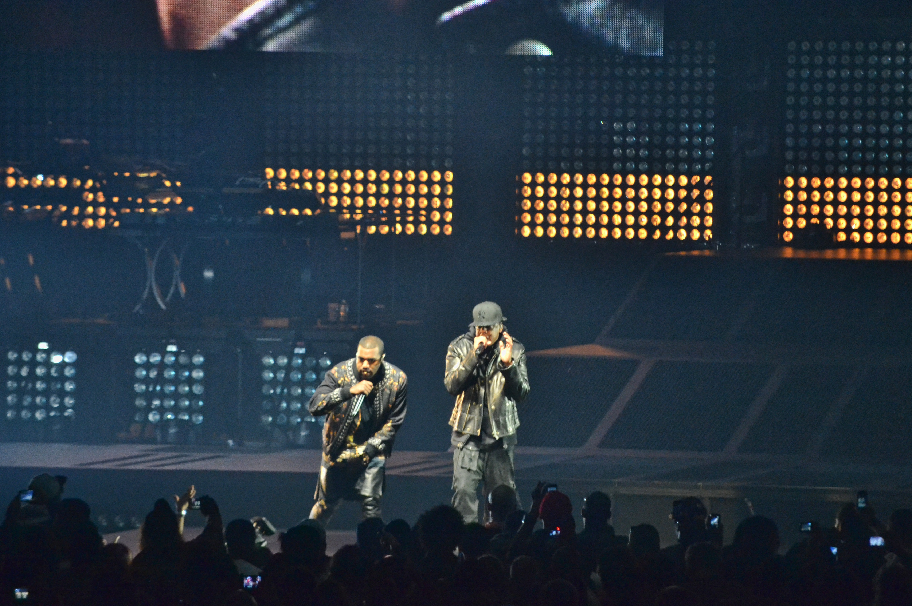

X
X
WATCH THE THRONE MINI-DOC
Kanye West has always dealt with music leaks in his career, and it has hurt the still very successful releases to his albums. One way he was able to stop music leakers from getting to his music was doing all in-house studio sessions for his project with Jay-z called Watch the Throne in 2010 during production where all the work was worked on in studio with producers and engineers having to travel across the world to be always in the studio during production to keep the music from being stolen through sending it online. The music was also kept on a hard drive stored in a three-layer safe to prevent it from potentially being stolen. Recording videos in the recording sessions were also banned as well to prevent any snippet of the new sound for the album being leaked to the public.
These are very extreme measures he took to stop the album from being leaked and it worked. No music was leaked from the Watch the Throne sessions and the album had an amazing commercial release with many classic songs including an amazing tour.
Kanye will always have music that has not been heard by the general public and the there will always be people who will want to listen to new Kanye Music outside of his released catalog as fans are always craving to hear a new sound from one of the greatest artists of our generation. Leaking as a generality in music as well will continue to grow with more and more artists having to deal with these issues becoming more common with hacking attacks leading to stolen music and selling the music to fans.
"Shoot for the stars, so if you fall you land on a cloud." - Kanye West